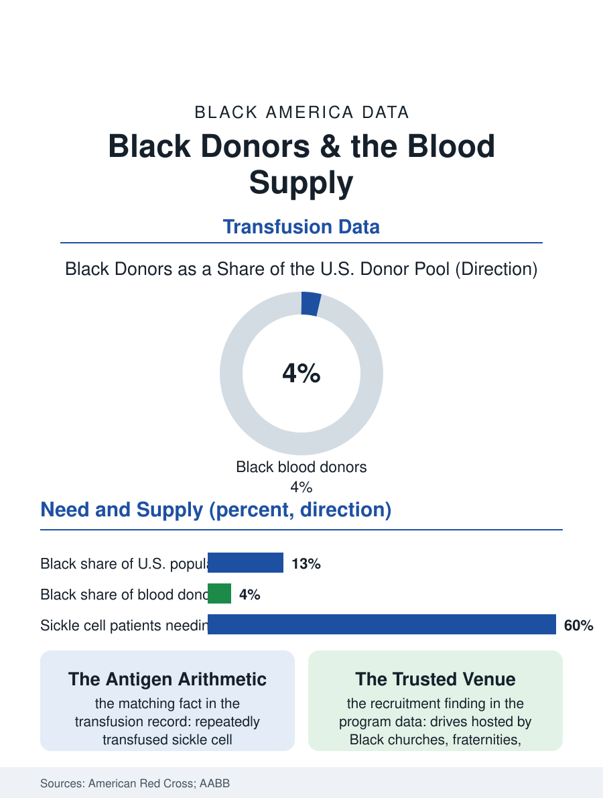

Black Public Health
The Matching Problem: Black Donors and the Blood Supply
The blood that sickle cell patients need most can only reliably come from Black donors, who are a small fraction of the donor pool. The blood file.

Every blood drive in America runs on a demographic fact the Red Cross states plainly: the rarest and most needed blood types for the patients who need the most transfusions are found most often in Black donors, who are the least likely group in the donor pool. Sickle cell patients, whose treatment in this atlas depends on frequent, closely matched transfusions, draw on a supply that Black donors are uniquely positioned to provide and that the system chronically struggles to maintain. This article reads the blood file.
The Matching Mathematics
Blood safety begins with the ABO and Rh types everyone knows, but transfusion medicine's deeper arithmetic runs on antigens, dozens of marker proteins whose combinations differ systematically by ancestry. Patients transfused repeatedly, as sickle cell patients are across a lifetime, develop antibodies when donor blood carries antigens their own lacks, until only closely matched units are safe. The matched units come overwhelmingly from donors who share the patient's ancestry, which makes the Black donor not merely welcome but medically specific: the best source, and for some patients the only source, of compatible blood. The type distribution adds urgency: type O, the universal donor blood that trauma care burns first, and B, more common among Black Americans than in the general pool, are both chronically short. Against this need the participation numbers run the wrong way: Black Americans are roughly thirteen percent of the population and a low single-digit share of the donor base in the collection agencies' reporting, a disparity with a documented anatomy rather than a mysterious one.
Why the Pool Is Thin
The file's explanatory chapters are historical, structural, and physiological. The historical chapter is the blood system's own segregated past, when donations were separated by race under a policy with no scientific basis, a memory preserved in the community institutions this atlas keeps encountering, reinforced by every subsequent episode in which Black patients' blood was treated as an instrument rather than a gift. The structural chapter is access: blood drives live in workplaces, universities, and houses of worship, and their geography follows employment and institutional density; eligibility rules exclude many willing donors, and deferral for low hemoglobin, the single most common reason donors are turned away, falls disproportionately on Black women, whose iron stores run lower on average, converting the system's own threshold into a recurring rejection experience at exactly the population the matching mathematics needs most. The physiological chapter is the iron itself: frequent donation depletes it, and the supplementation and interval guidance that keeps repeat donors eligible is communicated unevenly. None of the three chapters is a mystery of generosity. Surveyed willingness among Black adults runs at levels comparable to other groups; the pool is thin where the system is thin, in trust, in locations, and in the follow-through that converts a first donation into a habit.
The Drives That Work
The program record knows how to fix this, because it has fixed it locally many times. Drives hosted by Black institutions, churches, fraternities and sororities, HBCUs, and Black professional associations, out-recruit generic drives in their communities, especially when a named patient's story or a sickle cell partnership gives the matching mathematics a human face. Retention is the second lever: the collection data show first-time Black donors returning at lower rates, and the programs that close that gap use the file's familiar tools, rapid thank-you contact, iron guidance at the point of deferral rather than a flat rejection, and scheduling the next appointment before the donor leaves the chair. The medical system's own demand is rising, with aging populations and expanding sickle cell treatment, including the curative therapies whose protocols are transfusion-intensive, increasing the need for matched units. The blood file closes on the arithmetic it opened with, restated as plainly as the transfusion service states it: the patients who need the closest matches are Black, the donors who can provide them are Black, and the distance between those two facts is measured in drives not hosted, deferrals not softened, and trust not yet rebuilt. Every unit of it is closable, and the closing is a logistics problem wearing the clothes of a history problem, which means it can be solved by anyone willing to do both kinds of work.
More in Black Public Health
Hypertension Among Black Adults: Prevalence, Control, and Consequences
About 55 percent of Black adults have hypertension — the highest rate of any U.S. group. Prevalence, onset, control, and the stroke, heart, and kidney consequences in the data.
Diabetes Among Black Adults: Prevalence and Complications
Nearly one in five Black adults has diabetes, diagnosed or undiagnosed — and its complications fall with particular weight. The CDC data on prevalence, control, and outcomes.
Black Life Expectancy: The Gap at Birth and Its Causes
Black life expectancy at birth is about 73 years, roughly five years below the national figure — the summary measure of every health gap in this section. The CDC data.
Source: American Red Cross donor statistics; AABB (Association for the Advancement of Blood & Biotherapies) reports; sickle cell transfusion literature.